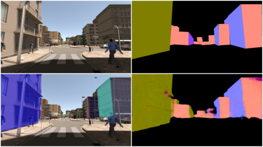
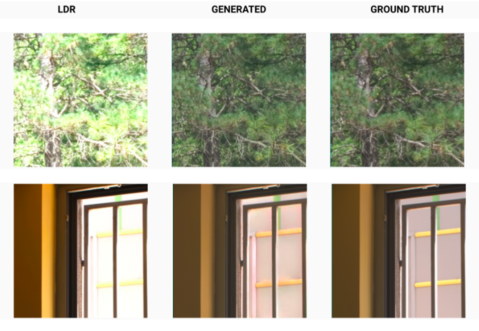

About me 🙋🏻♂️
I'm Mukul Khanna, I'm an early stage researcher working on the intersection of computer vision and deep learning. I was a research fellow at the Robotics Research Center, IIIT Hyderabad, where I worked on the surface normal estimation of building facades, advised by Prof. K. Madhava Krishna. Previously, I was a research intern at IIT Gandhinagar, advised by Prof. Shanmuganathan Raman, where I worked on HDR image and video reconstruction using deep learning.
Earlier yet, I was a Google Summer of Code 2019 student for Open Robotics, where I worked on creating a documentation index for Gazebo. During my undergrad, I was also a part of my college's Autonomous Underwater Vehicle (SRM-AUV) team.
In the past, I've hosted a data science podcast - Deep Neural Notebooks, where I interviewed academics and scientists about their research, insights and their journeys. I'm also interested in the ideas of knowledge management and have taken to Youtube to share my learnings on the same. And here is some photography and art that I've dabbled with in the last year.
Contact: <firstname> 18 <lastname> · at · gmail.com
Links: CV / Github / Linkedin / Twitter
Experience
Research Fellow - Robotics Research Center, IIIT Hyderabad 🤖Jan '20 - Apr '21

Advisor: Dr. K. Madhava Krishna
Working on building plane segmentation and surface normal estimation for 3D reconstruction from drone-view images using deep learning and geometrical methods.
Technical Writer & Editor - Scout APM ✍🏽Oct '19 - present
Advisor: Marty Johnson
Research Intern - IIT Gandhinagar 🕵🏻♂️ Feb '19 - Jan '20

Advisor: Dr. Shanmuganathan Raman
-
Worked on HDR image reconstruction from single exposure LDR image using Deep Learning.
project page / code / paper -
Worked on HDRSloMo: Deep Weakly-Supervised High Speed HDR Video Generation (to be submitted). [video]
Google Summer of Code 2019 - Open Robotics 🤖May '19 - Sep '19
Advisor: Jose Luis Rivero
- Created a documentation index and entry suggestion-tool for open-source robotic simulation software Gazebo.
Software Dev Intern - Remedico 👨🏻💻Jul '19 - Sep '19
- Worked on updates in the Python and Ruby based back-end systems of multiple dashboard apps for doctors patients. [website]
Software Intern - Tata Consultancy Services (TCS) Digital 👨🏻💻Jan '19 - Apr '19
Advisor: Snehal Khole, Debkumar Maiti
- Built a prototype of an Airline Helpdesk AI chatbot for getting flight details, booking and managing trips using a hybrid mobile application with speech support.
Software Team - SRM Autonomous Underwater Vehicle 🚢Sep '17 - May '19

- Developed the software stack and image processing modules for the vehicle using ROS (Robotic Operating System). [code]
- Developed an underwater simulation environment using ROS and Unity-3D to test vehicle performance. [Project page]
(Oral presentation at IEEE-OES UT-19, Kaohsiung)
Web Developer - Skylim Infotech 👨🏻💻Jul '17 - Oct '18
Advisor: Baraneedharan Karthikeyan, Dr. Revathi Venkataraman
- Worked on developing for a CRM Ticketing system that provides a platform for enterprises to solve customer grievances.
Publications
Building Facades to Normal Maps: Adversarial Learning from Single View Images
Mukul Khanna*, Tanu Sharma*, Ayyappa S. Thatavarthy, K. Madhava Krishna
Accepted at CRV 2021 18th Conference on Robots and Vision
webpage
Multi-view Planarity Constraints for Skyline Estimation from UAV images 🏢
Ayyappa S. Thatavarthy, Tanu Sharma, Harshit Sankhla, Mukul Khanna, K. Madhava Krishna
VISAPP 2021, 16th International Conference on Computer Vision Theory and Applications
FHDR: HDR Image Reconstruction from a Single LDR Image using Feedback Network 🌉

Zeeshan Khan, Mukul Khanna, Shanmuganathan Raman
2019 IEEE Global Conference on Signal and Information Processing (GlobalSIP)
[paper] / project page, code / slides
URSim: Open Source Simulator for Unmanned Underwater Vehicles using ROS & Unity3D 🚢

Pushkal Katara, Mukul Khanna, Harshit Nagar, Annapurani Panaiyappan
IEEE OES - Underwater Technology 2019, Kaohsiung (UT19)
paper / project page, code / slides
Projects
Embodied Question Answering Baseline in Habitat Lab 🤖[open source]

The aim is to implement an Embodied Question Answering Baseline in Habitat-lab, a modular high-level framework for end-to-end development in embodied AI.
Habitat Lab: https://github.com/facebookresearch/habitat-lab
More info about project: #374
Merged Pull Requests: #430 , #482
VQA baseline implementation [merged]: #487
NAV PACMAN baseline implementation [merged]: #539
FHDR: Feedback Network for Single Image HDR Image Reconstruction 🌉[open source]
PyTorch Implementation of our Global SIP 2019 Paper FHDR: HDR Image Reconstruction from a Single LDR Image using Feedback Network
Gazebo Documentation Index 🗂[open source]

The aim of this project is to bring all of Gazebo’s learning material under one webpage in the form of a documentation index that contains links to the content where the respective information is hosted.
URSim: Underwater Simulation Framework using ROS and Unity 🚢[open source]

An open source underwater 3D simulation framework for Unmanned Underwater Vehicles (UUVs) developed using Robotics Operating System (ROS) and real-time 3D game engine Unity.
SRM Autonomous Underwater Vehicle 🤿[open source]
SRM AUV is SRM IST's Autonomous Underwater Vehicle project, founded in 2013. The following is the link to the code of the vehicle.
P5.js visualizations 🎈[open source]

Visualizing algorithms, sequences, animations and some games using P5.js